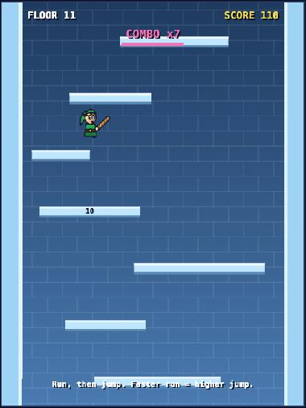

NYU Stern · Building with AI · Fall 2026
Slip Up!
A 60-second icy tower-climbing game for students killing time between classes: no install, no ads, no account. Just open the link and climb.
Product Showcase (Prototype / Live App / 2-Min Video)
Current Status: Build 1: rough local prototype (one HTML file, runs in any browser)
Demo: Play the prototype → (arrows/WASD to move, Space to jump)

Prototype screenshot: Lunk (green cap, baguette for a sword) mid-jump on floor 11 during a 7-floor combo.
All characters are original parody designs (Super Marinara, Soggy the Hedgehog, Tax-Man, Lunk) and are not affiliated with any real game or company.
Living PRD (Product Requirements Document)
Updated every week as we test with real users and learn what works.
1. Target User & The Job to Be Done
Who is this for? My Building with AI podmates and roommates: NYU students with a laptop open and 5–10 dead minutes between classes or while waiting for a build to finish. I see them every week, so I can watch them play and ask what they think.
The painful "Before" workflow: They reach for a phone game and hit an app-store install, a login, a tutorial, then ads or energy timers before a single minute of fun. Or they doom-scroll, which isn't actually fun. Browser games mostly have the same ads and pop-ups.
The "After" workflow with this product: Click one link, pick a parody character, and play. A run takes 30–90 seconds, your best score is saved, and one key restarts. Nothing to install, nothing to sign up for.
2. Scope & Explicit Non-Goals
- In Scope (Core Workflow): Open link → pick a character → run on slippery floors and build speed for bigger jumps → climb faster than the tower scrolls → fall → see score and best → restart with one key.
- Out of Scope #1: Accounts, online leaderboards, or any backend. Best score lives only in your own browser.
- Out of Scope #2: Phone/touch controls. Keyboard on a laptop only.
- Out of Scope #3: Story mode, multiple levels, power-ups, shops, or any monetization.
3. How It Works Under the Hood & Riskiest Assumption (Week 2+)
Riskiest Assumption: [What is the #1 technical or user risk that could sink this product?]
Simple Architecture: [User Input] → [Your App / Server] → [AI Model / Tool] → [Output]
4. Unit Economics & Analytics Snapshot (Updated Weekly)
Cumulative Build Spend
$0 extra (subscription)
Est. Cost Per User Run
$0 (runs in the browser)
User Evidence (Analytics from Build 2)
[Not yet measured]
Sponsor Call (Week 6)
TBD
Weekly Build Log
Build on at least two separate days each week outside class, including the November 3 break. Push commits and log actual progress, failures, PRD changes, costs, and hours here. All build deadlines are noon, New York time.
Build 1 · Intent.md & Throwaway Prototype (Due Nov 9)
- What shipped (Nov 3): A playable prototype in a single file (game.html, plain HTML + JavaScript canvas, no libraries, no API keys). Works: four parody characters drawn as vector art (outlines, shading, run animations) with slightly different stats; icy floors that keep you sliding when you let go; jumps that get higher the faster you run (≈1.2 floors standing vs ≈3.9 floors at full speed, measured); wall bounces that speed you up, plus a timed "wall kick" (jump within 0.2s of a bounce) that reaches ≈5.3 floors; a tower that starts scrolling after 5 seconds and speeds up; combos for multi-floor jumps; a saved high score.
- Things learned with AI: A game is a loop: read input → update physics → draw, about 60 times a second. Physics should run on a fixed clock ("fixed timestep") so the game plays the same on a 60Hz and a 120Hz screen. Parody only works when the joke is visible: the first Super Marinara looked like a straight copy, so we gave him a colander hat. Researching how classic tower climbers feel showed that a wall bounce should add speed, not lose it. My first version lost 10% of your speed on every bounce, so I changed it.
- What broke / changed: The local web server couldn't read files in iCloud Drive (macOS privacy block), so the prototype now runs by opening the file directly in a browser. Our automated test bot "lost" constantly at first. That was the bot letting go of jump too early, not a game bug, but it showed that the first 3 seconds were too harsh, so the scroll now waits 5 seconds. Soggy (the slipperiest character) is hard to control; that may be a feature or a bug, and playtesting will tell. The first characters were 12×16 pixel art and looked too basic, so I redrew them as smooth vector shapes. I couldn't make the class org the repo owner, so the repo lives on my personal account for now (letting the instructors know).
- Cost & time this week: $0 runtime (no APIs) · coding agent: Claude Code on my existing subscription · 3 hours
Build 2 · Smallest Local Version & PostHog (Due Nov 16)
- What shipped: [Local working slice, PostHog verified on this page and the local app, PRD v2, and local setup in AGENTS.md]
- What broke / changed in PRD: [Fill in]
- Cost & time this week: $[0.00] · [0] hours
Build 3 · Build.exe: The Core Workflow (Due Nov 23)
- What shipped: [End-to-end workflow working with real inputs + PostHog funnel events]
- What broke / changed in PRD: [Fill in]
- Cost & time this week: $[0.00] · [0] hours
Build 4 · Test.py: Choose Track A or Track B (Due Nov 30)
- Chosen track: [A: 10-case domain eval and one outside target-user review; OR B: 3–5 outside users and replay findings]
- Results and improvements: [Before/after evidence; for Track B, fixes to the top three friction points]
- PRD v4 changes: [What the evidence changed]
- Cost & time this week: $[0.00] · [0] hours
Build 5 · Ship.installer: Launch Ops, Rollback Check & 2-Min Video (Due Dec 7)
- Launch Ops & Safety: [Verified no exposed keys, set spend cap, tested 2-minute rollback]
- 2-Minute Video & Final Polish: [Link/embed above]
- Cost & time this week: $[0.00] · [0] hours